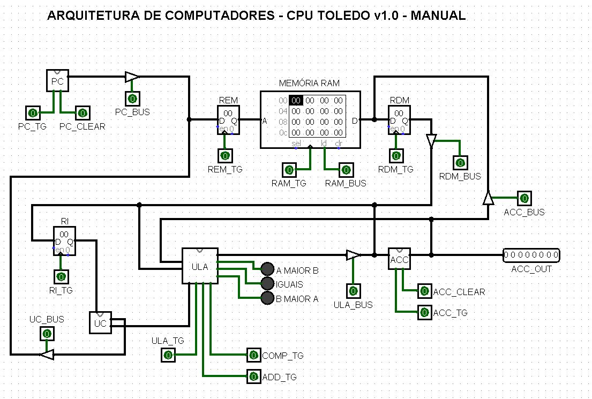
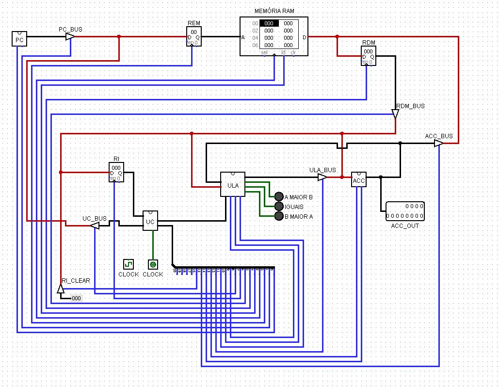
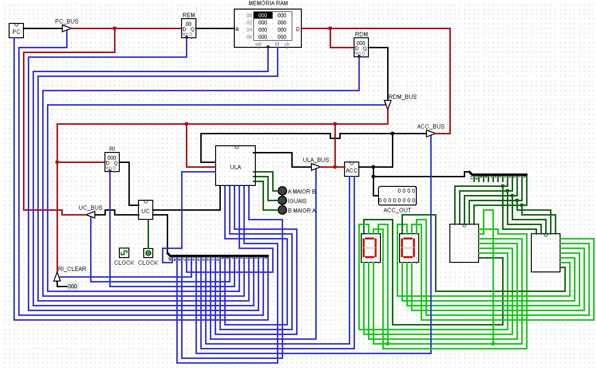

Trabalho
Reprogramar a arquitetura para que seja capaz de realizar mais 3 instruções, além
das já existentes. As novas instruções serão: Subtração, Multiplicação e Divisão.
Com as novas instruções, a arquitetura será ampliada, saltando para uma nova
versão.
CPU TOLEDO v 1.0

Largura do barramento de dados (BD): 8 bits
Largura do barramento de endereço (BE): 8 bits
Largura do barramento de controle (BC): 18 bits de sinais
A arquitetura a cima é manual, ou seja, precisa ficar acionando para funcionar
CPU TOLEDO v 4.0

Características:
Largura do barramento de dados (BD): 12 bits
Largura do barramento de endereço (BE): 8 bits
AUMENTO da largura do barramento de controle (BC) para 21
bits de sinais para atender as novas instruções
Os novos fios ainda não estão ligados na ULA
Ainda não executa as novas instruções
Unidade de Controle Automática
CPU TOLEDO Final

Características:
Alteração do programa na Memória RAM com novas instruções:
Subtração, Multiplicação e Divisão
Largura do barramento de dados (BD): 12 bits
Largura do barramento de endereço (BE): 8 bits
AUMENTO da largura do barramento de controle (BC) para 21
bits de sinais para atender as novas instruções
Os novos fios estão ligados na ULA
Coloquei dois componentes feitos no primeiro termo, que mostra em decimal no display de 7
segmentos, o valor que esta armazenado no acumulador (parte extra)
Executa as novas instruções
Unidade de Controle Automática